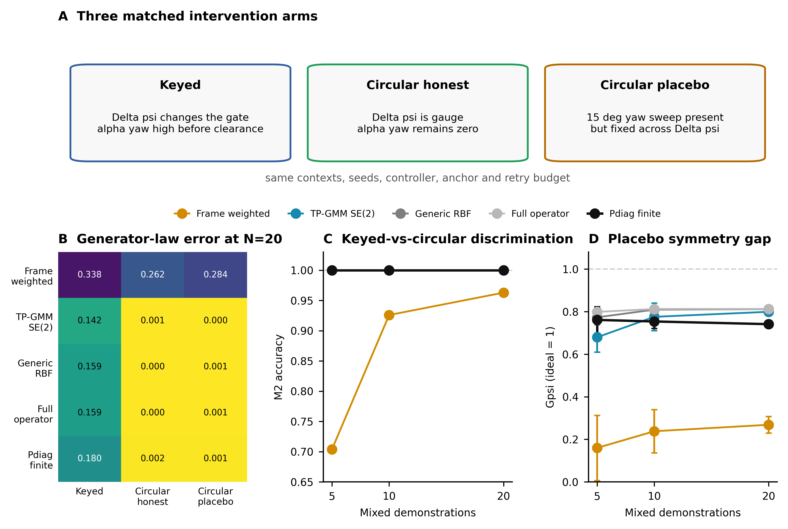
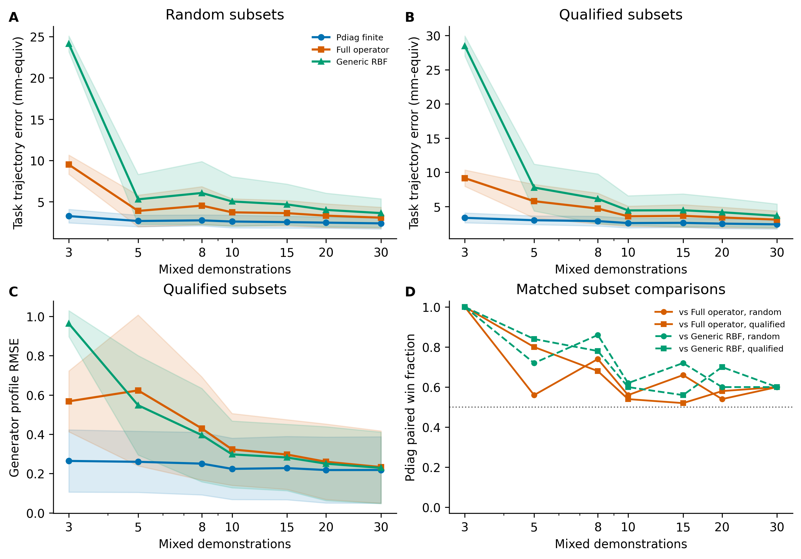
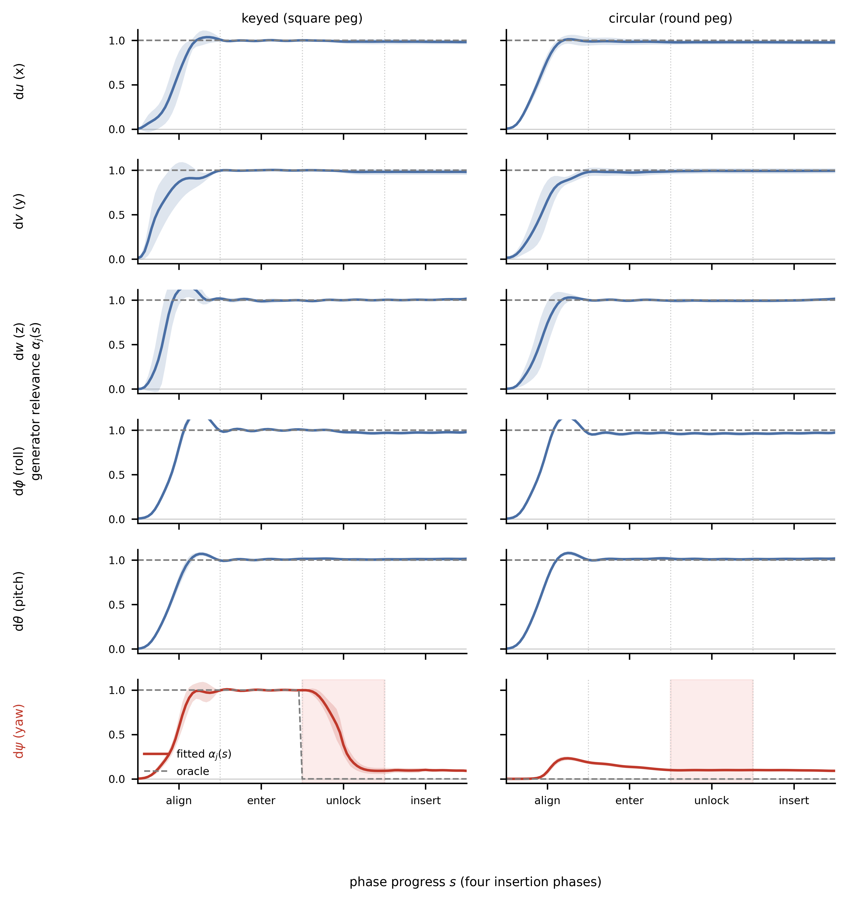
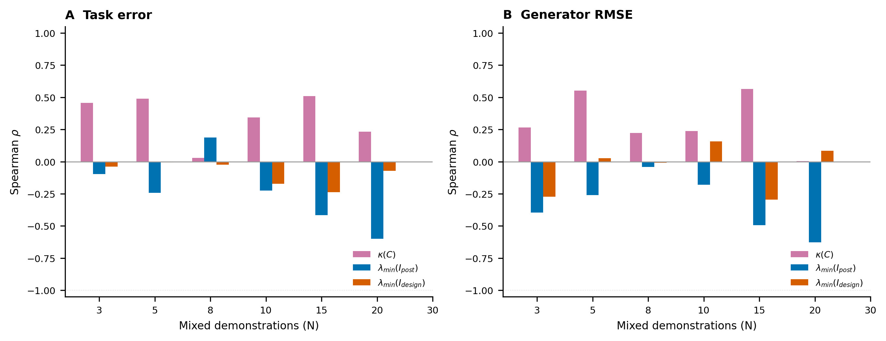
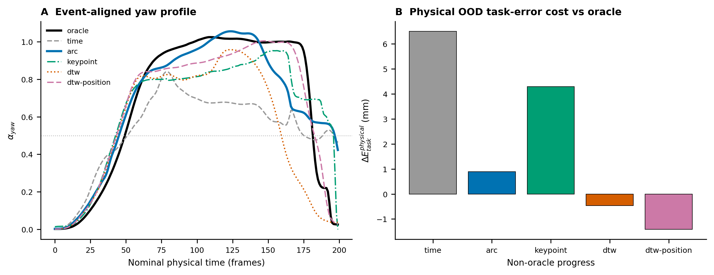

§Abstract
Learning from demonstration must adapt skills when task objects move, but task-parameterized methods often treat each reference frame as a single relevance unit. We argue that this unit is too coarse because the translation and rotation generators inside one relation can obey different task constraints across skill phases. We introduce a phase-dependent generator relevance representation that selects which relation changes should propagate and lets rigid-body geometry realize the selected finite motion. The learned transformation law is identified through isolated generator interventions, while symmetric execution is evaluated with quotient task-space metrics. In a keyed-to-circular insertion task, the method recovers a sharp phase switch: lateral translation remains relevant, axial yaw is propagated while the key constrains the gate, and the same yaw generator is suppressed after physical clearance. A matched circular-placebo intervention further contains a visible yaw sweep without any axial-yaw intervention response, separating trajectory statistics from task relevance. Fixed-context replications, few-shot tests, rotation-of-the-world controls, and task-space symmetry interventions support representing task relevance at the generator level rather than enforcing a single relevance value for an entire reference frame.
§The key idea
Task-parameterized models re-express a skill in object-centered frames and adapt it when those frames move. But each frame is usually treated as one relevance unit — a single scalar weight. That unit is too coarse.
Inside a single relation there are several generators — lateral translation (x, y) and axial rotation (yaw). These generators obey different constraints at different phases of the same skill. A scalar weight that is forced to serve them all must compromise.
gψ(s) therefore drops 1 → 0 at the clearance point.
Our method learns a phase-dependent generator relevance αj(s) — a diagonal law that lets each generator carry its own relevance profile across phases, rather than one shared value for the whole frame. A scalar model (w(s)·I) cannot express this: to suppress yaw it must also under-follow translation, landing on a compromise weight w ≈ 0.568 that is wrong for both. The diagonal law follows translation and zeroes yaw, simultaneously and exactly.
Identification is decoupled from evaluation: we probe each generator in isolation (translation-only and yaw-only interventions) to identify the law, then assess symmetric execution with quotient task-space metrics that are invariant to the gauge freedom. A matched circular-placebo control — an arm with a visible yaw sweep but no axial-yaw response — rules out the possibility that the model merely memorized trajectory statistics.

§Results highlights




§Experimental videos
All videos are physical replays of recorded trajectories (qpos + peg/socket poses) rendered in the ManiSkill simulator. Click to play.
coreThe phase switch is physical, not memorized
Three arms under the same held-out intervention (socket yaw +30°), differing only in geometry and demonstrator yaw behavior.
gψ(s)=1→0.se3Six-generator SE(3) variant
few-shotSample efficiency
predictionsCounterfactual predictions vs. ground truth
Offline models predict the trajectory response to a given intervention; overlays show ground truth (black), nominal (grey), scalar models (orange/blue), TP-GMM SE(2) (purple), and the diagonal law (green).
controlsControls & ablations
interventionsNominal & isolated-generator interventions
§Code
Full implementation, benchmark scripts, and video-generation tooling live in the public repository.
github.com/cheng9911/maniskill_spectrum
phase_switch_symmetry/phase_switch_symmetry_env.py— keyed / circular phase-switch environments (ManiSkill 3.0.1)phase_switch_symmetry/collect_phase_switch_rotated.py— data collection & the phase-parameterized solverphase_switch_symmetry/phase_switch_baselines.py— baselines (frame-weighted, phase-scalar GP, TP-GMM, RBF, full/diagonal operators, Pdiag)phase_switch_symmetry/benchmark_symmetry_transfer.py— symmetry-transfer benchmark (M1/M2/M2b/M0/M3)phase_switch_symmetry/phase_switch_se3_baselines.py— SE(3) six-generator model layerphase_switch_symmetry/benchmark_se3_transfer.py— SE(3) six-generator benchmarkphase_switch_symmetry/run_phase_switch_fewshot.py— few-shot sweepphase_switch_symmetry/make_*.py— figure & video rendering
§Citation
@inproceedings{anonymized2026taskframes,
title = {Task Frames Are Too Coarse: Learning Phase-Dependent
Generator Relevance for Geometric Skill Transfer},
author = {Anonymous Authors},
booktitle = {Under review},
year = {2026}
}